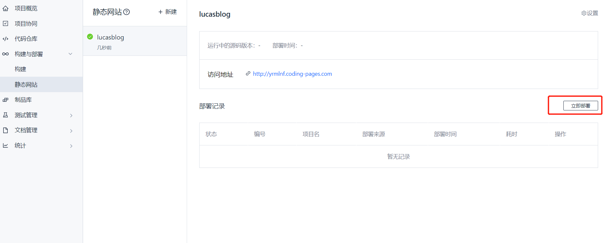

# 操作系统
# 软件依赖
^ Lastest ~ minimum
- nodejs 10.10.0~
- Git~
# 实验环境
- Windows10
- nodejs-12.15.0
- npm-6.134
- Git~
- NexT-7.7.2
# 什么是 Hexo
Hexo 是一个快速、简洁且高效的博客框架。Hexo 使用 Markdown（或其他渲染引擎）解析文章，在几秒内，即可利用靓丽的主题生成静态网页。
# 安装 Nodejs
# 安装 Git
- Windows：下载并安装 git.
- Mac：使用 Homebrew, MacPorts 或者下载 安装程序。
- Linux (Ubuntu, Debian)：sudo apt-get install git-core
- Linux (Fedora, Red Hat, CentOS)：sudo yum install git-core
Mac用户
如果在编译时可能会遇到问题，请先到 App Store 安装 Xcode，Xcode 完成后，启动并进入 Preferences -> Download -> Command Line Tools -> Install 安装命令行工具
Windows用户
对于中国大陆地区用户，可以前往 淘宝 Git for Windows 镜像 下载 git 安装包。
# 安装 Hexo
- 官方推荐采用 npm 进行安装
上面的命令会把 hexo.cmd 安装到全局包仓库中，由于该仓库文件夹在 Windows 系统的 path 中。所以你就可以在任意位置执行 hexo 命令了。npm install hexo-cli -g
- 确认是否安装完成该命令会显示 hexo 的版本及依赖的包。
hexo -v
# Hexo 新建博客
- 初始化博客，进入命令行 (<kbd>Ctrl</kbd>+<kbd>R</kbd>，输入 cmd，回车)，然后输入下面命令改命令会创建一个 blog 文件夹
$ hexo init blog
- 启动博客
cd bloghexo s
#显示如下INFO Start processing
INFO Hexo is running at http://localhost:4000 . Press Ctrl+C to stop.
打开网页 http://localhost:4000 ，就能看见默认主题 landscape 的 Hexo 博客
# Hexo 安装主题
创建 Hexo 主题非常容易，您只要在 themes 文件夹内，新增一个任意名称的文件夹，并修改 _config.yml 内的 theme 设定，即可切换主题。一个主题可能会有以下的结构：
├── _config.yml
├── languages
├── layout
├── scripts
└── source
这里演示安装 NexT 主题，假设你的博客目录为 blog
- 首先先把 NexT 主题的源码下载下来放在 blog 目录的 theme 目录下下载完成后我们可以检查一下 blog/theme 里面是否多了 next 这个主题的文件夹
cd bloggit clone https://github.com/theme-next/hexo-theme-next themes/next - 修改 blog 目录下的_config.yml
找到下面这行代码修改为theme: landscape
theme: next
- 重启 Hexo
如果你的 Hexo 已经启动，按 <kbd>Ctrl</kbd>+<kbd>C</kbd > 停止，然后再次启动sh Hexo s
- 再次进入博客首页，会发现主题已经更改
其他主题也是类似的安装方法
# Hexo 项目部署到 Git
github 提供免费的发布静态页面服务，所以很多人把博客部署在 git 上，next 主题也集成了这个功能。github 速度相对 coding 会慢很多
安装插件
npm install --save hexo-deployer-git
首页要先到 github 上创建一个仓库，可以参考 Github 部署静态页面
生成本地密钥
首先打开 cmd 命令行（<kbd>Ctrl</kbd>+<kbd>R</kbd>，输入 cmd，回车），输入ssh-keygen
输入完毕后按回车，程序会要求输入一个密码，输入完密码后按回车会要求再确认一次密码，如果不想要密码可以在要求输入密码的时候按两次回次，表示密码为空，并且确认密码为空，此时 [c 盘> 用户 > 自己的用户名 >.ssh] 目录下已经生成好了
复制 [c 盘> 用户 > 自己的用户名 >.ssh] 目录下的 id_rsa.pub 文件的内容将密钥添加到 github 账号下
修改 blog 目录下的_config.yml
repo 改为你的 Github page 仓库的 ssh 地址，右上角可以切换 https 与 ssh 的链接deploy:
type: git
repo: git@github.com:LucasDemo/lucasdemo.github.io.git
branch: master
使用 hexo 自带部署功能
hexo clean & hexo g & hexo d
如果出现下面提示
Are you sure you want to continue connecting (yes/no/[fingerprint])?输入 yes 后回车
以后每次博客都可以这样来更新了
# Hexo 项目部署到 Coding
Coding 是国内版的 github，他也提供免费静态页面服务。
- 安装插件
npm install --save hexo-deployer-git
- 首页注册一个 coding 账号
填写 blog 名与域名，验证个人信息完成注册 - 实名认证，想要使用 coding page 的服务必须要实名认证
根据提示完成实名认证即可 - 创建项目

- 部署静态页面
首先进入到项目页面，点击部署

等待部署成功
上面的访问地址就是我们的博客地址 - 添加 ssh 密钥
为了能免密码推送到仓库，需要配置密钥
首先打开 cmd 命令行（<kbd>Ctrl</kbd>+<kbd>R</kbd>，输入 cmd，回车），输入 (如果已经有密钥了就跳过)复制 [c 盘> 用户 > 自己的用户名 >.ssh] 目录下的 id_rsa.pub 文件的内容sh ssh-keygen
在 coding 里创建一个密钥 - 修改 blog 目录下的_config.yml
配置成同时推送到 github 与 coding，当我们更新博客的时候，两个仓库都会一起更新#修改地方 1 http://yrmlnf.coding-pages.com/ 换成你的博客地址，不然 coding 加载出来会找不到 js 与 css 文件# URL## If your site is put in a subdirectory, set url as 'http://yoursite.com/child' and root as '/child/'url: http://yrmlnf.coding-pages.com/
#修改地方 2deploy:
type: git
repo:
github: git@e.coding.net:lucasblog/lucas.git,master
gitcafe: git@github.com:LucasDemo/lucasdemo.github.io.git,master
- 推送到仓库
命令行下输入如果出现下面提示h hexo clean & hexo g & hexo d
输入 yes 后回车Are you sure you want to continue connecting (yes/no/[fingerprint])?